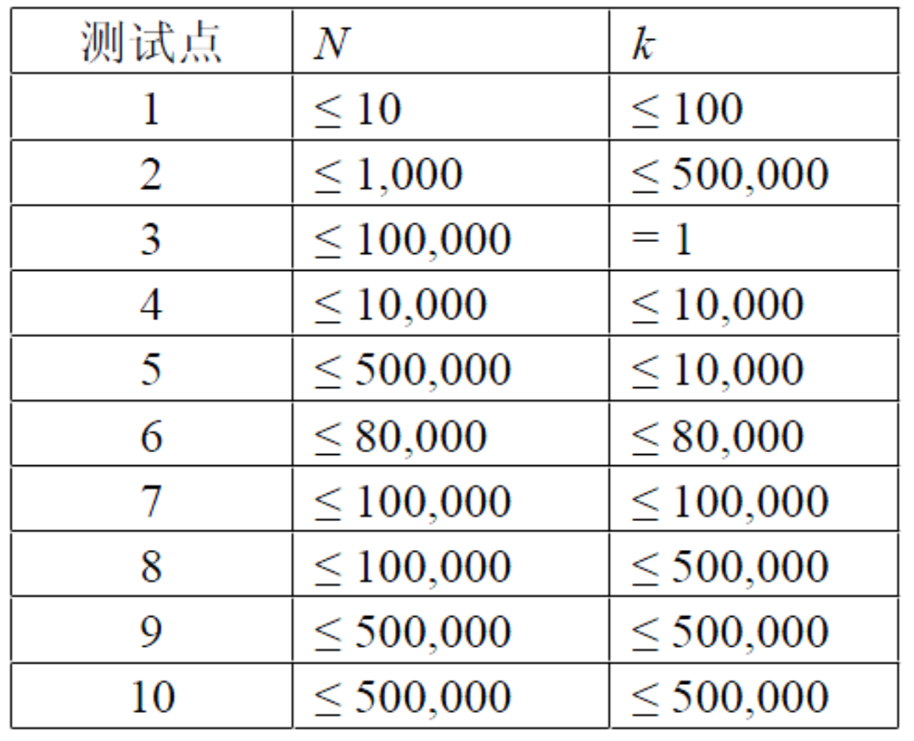

【样例说明】
共有5种不同的超级和弦：
1.音符1 ~ 2，美妙度为3 + 2 = 5
2.音符2 ~ 3，美妙度为2 + (-6) = -4
3.音符3 ~ 4，美妙度为(-6) + 8 = 2
4.音符1 ~ 3，美妙度为3 + 2 + (-6) = -1
5.音符2 ~ 4，美妙度为2 + (-6) + 8 = 4
最优方案为：乐曲由和弦1，和弦3，和弦5组成，美妙度为5 + 2 + 4 = 11。
【数据规模和约定】
总共10个测试点，数据范围满足：

所有数据满足：$-1000 ≤ A_i≤ 1000$，$1 ≤ L ≤ R ≤ n$且保证一定存在满足要求的乐曲。
 Comet OJ
Comet OJ